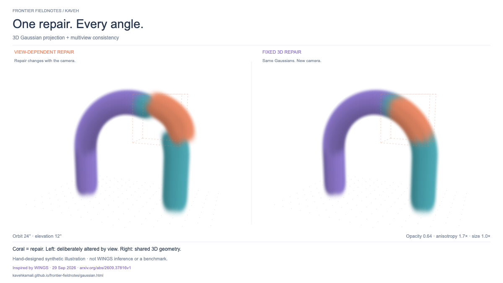

THIS WEEK’S VISUAL · 05 OCT 2026
One repair. Every angle.
Previous visual · sampler steps, diffusion and flow matching
FRONTIER EXPLAINED · SEPTEMBER 2026
Fewer steps.
Did we miss the turn?
FlashRender (3 Sep) asks why the camera drifts when sampling gets faster.
Pull the mechanism apart. Follow the field. See what a big step loses.
Few-step, camera-controlled video rendering.
Read the paper ↗Mechanism explorer below · not a reproductionStraight training paths can produce curved sampling paths. The direction changes as each point moves through the field.
What you’re seeing: an exact Gaussian-mixture field with numerical sampling. No trained model or hidden clean endpoint. Diffusion starts from a known noisy mixture. Colors identify particles, not classes.
The math, the paper, and the limits ↗
Flow matching integrates the conditional mean velocity of independent straight-line noise–data paths. Diffusion uses the exact score ∇ log p of a Gaussian mixture. The ODE uses a deterministic probability flow; the reverse SDE adds fresh noise with the corresponding drift. Euler and Heun are numerical approximations; more steps change accuracy, not playback speed. Scrubbing interpolates between computed states.
Grey marks in deterministic modes follow the same initial samples using 256-step Heun; this is a numerical reference, not ground truth. In stochastic mode they show independent target samples instead. Its second-moment diagnostic checks one distribution statistic, not individual paths or overall sample quality. Particles outside the viewport are not clamped.
FlashRender · 3 Sep 2026 connects camera-control inconsistency to discretization and reduces trajectory curvature before few-step distillation. This explorer illustrates a shared numerical issue; it does not run FlashRender, MeanFlow or a video model. A Lagrangian View of Flow Matching · revised 5 Sep 2026 offers a related particle perspective. Foundations: Flow Matching (2022) and Score-based SDEs (2020).
THE VISUAL LAB 01 / GENERATIVE MODELS
The essentials, one layer at a time.
WEEKLY LIST 01 · FRONTIER WATCH CHECKED 05 OCT 2026
Creative AI, at the frontier.
WEEKLY LIST 02 FUNDAMENTALS → INTERACTIVE GRAPHICS
What we should make visible next.
PRODUCT & COMMUNITY WATCH CHECKED 05 OCT 2026
What changed for filmmakers.
Signals from the community
Community anecdotes guide investigation. Vendor announcements establish advertised features, not independent quality rankings. This is a dated snapshot; weekly editions and midweek checks refresh it.
PUBLISHING STUDIO EDITION 002 · 05 OCT 2026
One idea. A complete publishing kit.
Edits stay in this browser session. Download to keep them. Drafts are prepared for your editorial review; nothing is posted to social accounts.



Silent, captioned animation. Schematic particles, not model samples or benchmark evidence.
60-second narration & shot list ↓EDITORIAL RHYTHM